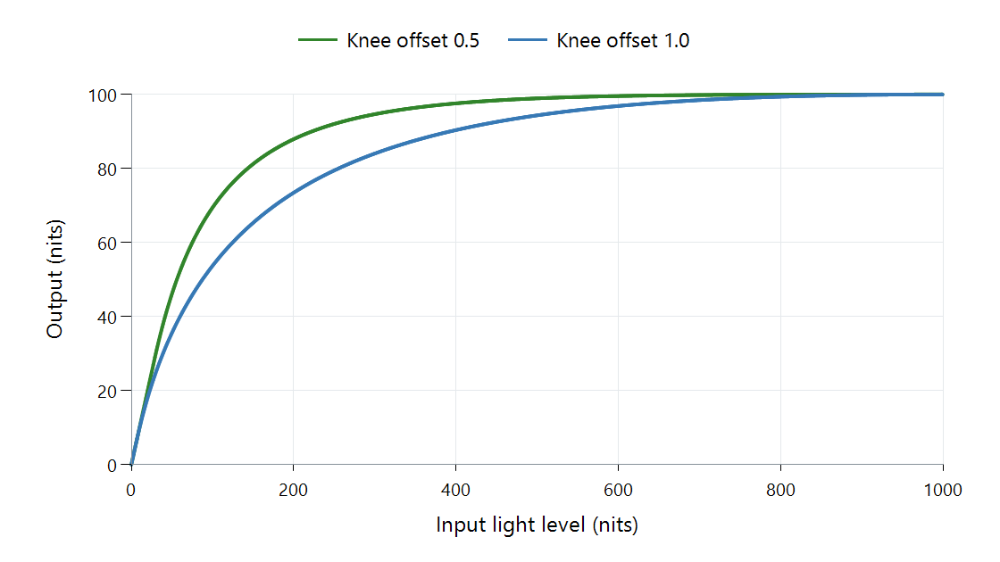

Tone Mapping Curve: BT.2390
The BT.2390 EETF uses a smooth highlight roll-off to adapt an HDR signal to a display with a smaller luminance range.
The BT.2390 electrical–electrical transfer function, or EETF, adapts a signal to another display range. Its highlight section joins a lower segment to a smooth roll-off in PQ coordinates.

libplacebo 7.360.1, zero source and target black. Offset 0.5 follows the report's knee convention; offset 1.0 is this library's default. The calculation uses PQ, while the axes show light levels.
Compare points rather than only endpoints
| Input light | Knee offset 0.5 | Knee offset 1.0 |
|---|---|---|
| 10 nits | About 10.00 nits | About 9.84 nits |
| 100 nits | About 69.45 nits | About 53.73 nits |
| 500 nits | About 98.95 nits | About 94.37 nits |
| 1,000 nits | 100 nits | 100 nits |
Both peaks fit. The earlier transition for offset 1.0 changes more of the range, including the 100-nit point. A comparison of peak white would miss that difference.
How the roll-off is joined
The mapper expresses the destination ceiling relative to the source range in PQ. The knee convention chooses where a lower unchanged segment ends. A Hermite-polynomial segment connects that point to the destination ceiling with controlled endpoint behavior.
That gives the upper region a gradual reduction in slope. Neighboring bright inputs remain distinct, but their output spacing becomes smaller. The curve's joining constraints avoid an abrupt break in its value relationship.
The full adaptation also accounts for black-level differences. Setting black to zero on both sides in this figure isolates the highlight behavior. A destination with a higher black floor requires another lower-range adjustment.
An EETF changes signal values between representations or ranges. An EOTF instead defines the signal-to-light response. PQ provides the working coordinates here; the adapted signal still needs its appropriate output interpretation.
For Emby playback, identify the mapper, knee convention, and source/target bounds when comparing this curve. It is useful for HDR-to-HDR fitting as well as illustrating reduction to a smaller range. The table shows the ordinary light levels affected by that fit.